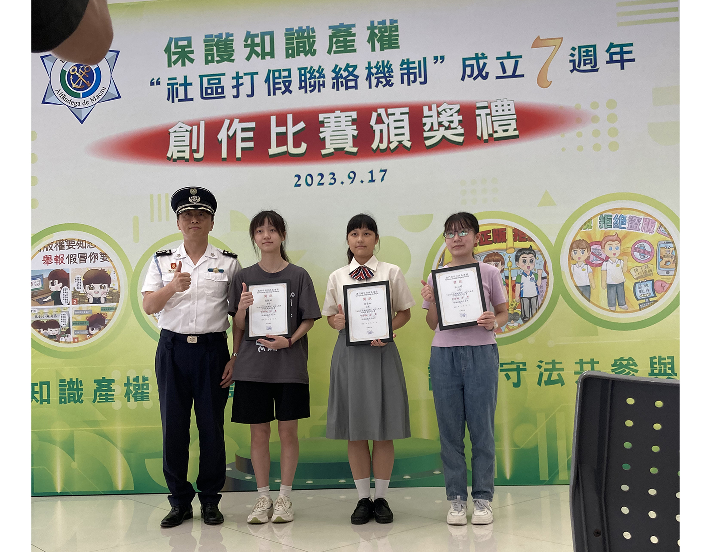
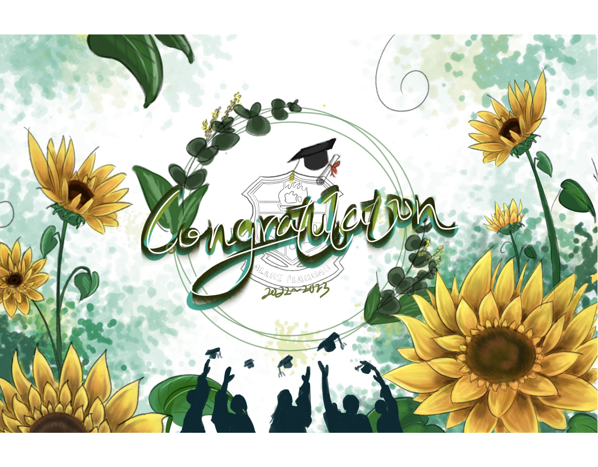

作品集展示
2021-2024
| _____________________________ | _____________________________ | _________________________________________________________________________ |
| 聯絡方法: | 學習經驗: | 聯絡電話 66681496 | 國中時 |
| 電子郵件 soumelodycat@gmail.com | 作為學校繪畫校隊成員 | |
| 高中時 | ||
| 專長: | 作為學校繪畫校隊成員 | |
| 善於溝通 設計與手工藝 | 代表學校參加各種各樣的繪畫比賽 | |
| 擔任學校學生會總務部、英文大使、閱讀大使、環保小組、壁報小組成員 | ||
| 軟體能力:(1☆ ~ 5☆) | 為學校義工服務了達101小時 | |
| Microsoft Office | ☆☆☆☆ | |
| Adobe Photoshop | ☆☆☆☆ | 證書: |
| Adobe Illustrator | ☆☆☆ | 2023 |
| Blender 3D | ☆☆☆ | MOS 國際認證EXCEL2019ASSOCIATE |
| fusion 360 | ☆☆ | MOS國際認證PowerPoint2019ASSOCIATE |
| AutoCAD | ☆☆ | MOS國際認證PowerPoint2016ASSOCIATE |
| 網頁設計 | ☆☆ | 中華青年進步協會 短片創作培訓班畢業證書 |
| 語言能力:(1☆ ~ 5☆) | 2022 | |
| 粵語 | ☆☆☆☆ | 青年義工基礎訓練課程(12小時)修畢證明書 |
| 國語 | ☆☆☆☆ | 明日之星廣告策劃培訓計劃畢業證書 |
| 英文 | ☆☆☆ | |
| 成就： | ||
| 教育背景: | 2024 | |
| 澳門聖保祿學校 | 「警察．反詐」填色、繪畫及口號比賽 入圍獎 | |
| 高中、國中、小學、幼稚園 | 2023 | |
| 澳門特別行政區海關四格漫畫比賽 冠軍 | ||
| 性格: | 全澳潔淨能源城市挑戰賽 亞軍 | |
| 勤奮向上，有探究精神 | 華藝風貌中學組 季軍 | |
| 積極樂觀，不輕易放棄 | 「警察．形象」填色、繪畫及口號比賽 三等獎 | |
| 「警察．形象」填色、繪畫及口號比賽 入圍獎 | ||
| 第十二屆「小城影畫」填色比賽 優異獎 | ||
| 校內FRA ANGELICO安吉利科藝術獎 | ||
| 2022 | ||
| 擁抱「基本法」抱枕繪畫比賽 季軍 | ||
| 《残疾權利公約》填色比賽2022 優異獎 | ||
| 「夢想童盟」的新春利是封設計比賽 入圍獎 | ||
| 校內高一班內成績第三 | ||
| 2021 | ||
| 校內初三班內成績第一及操行獎 |
獲獎

澳門海關保護知識產權繪畫比賽 冠軍
創作主題："知識產權-四格漫畫"
作品命名：資訊保護
創作理念：背景是主人公因為漫畫的版權問題被盜而垂頭喪氣，接着有兩個人正在科普有關知識產權的訊息，最後呼籲大家要做好知識產權的保護。
中華傳統文化推廣計畫青少年創新手繪中華文化特色口罩創作比賽2-華藝風貌中學組 季軍
創作主題："中華文化特色口罩-華藝風貌"
作品命名：現代青花瓷
創作理念：以青花瓷的形式去展現中華傳統文化的風格，結合比賽主題「華藝風貌」四字，戲劇，大三巴，舞龍舞獅，煙花，荷花，燈籠，長城，印章，竹子等元素。

「警察．形象」填色、繪畫及口號比賽 入圍獎及三等獎
創作主題："「警察．形象」並附上口號"
作品命名：可靠的英雄
創作理念：運用了剪影和漫畫的形式將警察的形象生動地展現出來，如左面的圖以警犬為形狀，內部是黃昏的路上正在出警的警察，加上旁邊的口號，展現出警察出警迅速可靠的形象；如右面的圖是交通意外為背景，接線員由收到報案電話後，出警的警察，最後把事情完美收尾，再加上中間的口號，可以同樣展現出處理事情迅速，可靠的形象。

澳門無疆界青年協會 的擁抱「基本法」抱枕繪畫比賽 季軍
創作主題："澳門&「基本法」"
作品命名：澳門街
創作理念：這幅畫作以議事庭前地為中心，兩邊是澳門的特色建築形成一條獨特的澳門街，而最後的兩個齒輪環環相扣代表着基本法和憲法的關係，與創作的主題呼應。
Superior Culture 上‧文化的黑白繪畫大賽2023 亞軍
創作主題："黑白"
作品命名：淚痕
創作理念：創作以黑白為主題，一隻包含悲傷的眼睛，淚水奪眶而出，深邃的眼窩，眼睫毛根根分明，凌亂飄散的碎髮，讓人有一種共情的傷心感覺。
第十二屆《小城影畫》攝影及繪畫填色比賽 優異獎
創作主題："睦鄰共融"
作品命名：共融地球
創作理念：在地球的不同大陸上，生活着各式各樣的人，也存在着各種各樣的建築，希望通過將心比心，還有背後的各種不同地方的建築物，展現出人們生活共融互相幫助的現象，再加上象徵着和平的白鴿和印有口號的絲帶，更好地展現出睦鄰共融的主題。

夢想童盟「童樂盃」2022—紅包設計比賽 入圍獎
創作主題："紅包"
作品命名：兔年紅包
創作理念：正面的中央是一隻袋袋的小白兔，後方有着一行魚鱗紋，飄着中國風格的雲，再加上新年的燈籠和鞭炮，正面和背面的中央都有新年快樂的字句，更好地展現出新年的氣氛，更讓人清楚了解到兔年到了。
設計作品

創作主題："交流交融，創想未來"
作品命名：時空之窗
創作理念：透過一扇窗戶象徵性地分隔並連接了兩個世界：室內，一個小男孩象徵著傳統的價值和熟悉的安寧；而窗外，廣闊的宇宙、飛舞的火箭、穿梭的無軌列車以及神秘的UFO描繪了一個充滿無限可能的未來。小男孩與一位太空人通過窗戶手對手相望，彷彿就在這一刻兩個世界通過他們的雙手交融了在一起，這不僅突顯了傳統與未來、熟悉與未知之間的對話，也象徵了人類對於探索的永恆渴望和對未來的無限想象。
創作主題："海洋污染"
作品命名：有毒的海洋
創作理念：本作品通過不斷向上游的水母，像是向上逃離着，因為下方的礁石佈滿了垃圾，因為水母的生命力普遍是比較頑強的，若果連這樣的水母也需要拚命地向上逃離，也側面說明了可讓的污染有多麼嚴重，即使人類經常認為水母是有毒的，但是也毒不過這有毒的海洋。
創作主題："生日咭設計"
作品命名：生日祝福
創作理念：这幅生日卡用蓝色调传递了一种轻松和平静的氛围，蓝色给人一种安心的感觉，，生日不只是庆祝，还意味着新的开始。蛋糕上的花朵和植物代表生活的多样和丰富，每一朵花都是对美好事物的期待、健康、幸福和成功的祝福。
創作主題："澳門&煙花"
作品命名：晚上的觀光塔
創作理念：這是一幅觀光塔的夜景，一閃而過的煙花剛好被定格在這一刻，色彩繽紛的煙花映照出五彩斑斕的觀光塔還有海中的倒影，地上的人們也為了這一刻的美麗而坐車到觀光塔附近欣賞，導致排起了一條長長的車龍。
練習


海報
設計作品

創作主題："學校52周年"
作品命名：沒有(團體創作-負責線稿和底色)
創作理念：創造理念一個充滿着忌廉的雙層蛋糕，以藍色為底色突出了學校的高貴，同時也象徵着安定和平，願意學校可以一直平平安安地傳承下去，蛋糕尚有着52的數字氣球和插着一支學校的校旗，背後是一些氣球和拉炮，突出了生日的氣氛。
創作主題："英文大使的象徵"
作品命名：沒有(團體創作-負責草稿、線稿、上色和最後修整)
創作理念：整體形像以聖保祿的校徽作為基礎，中間有像徵著威嚴的獅子和充滿幻想的獨角獸，都向著中間的SP火炬，說明了英文大使是建基於聖保祿的，而且非常 敬重象徵聖保祿的火炬。
創作主題："中英文藝術薈萃節"
作品命名：無
創作概念：以活潑的顏色作為底色，不同顏色互相交錯，營造一種活躍的氣氛，有各種不同的表演元素透露出這場演出有那些節目。

創作主題："獎勵星期五"
作品命名：無
創作理念：在星期五的那天，充滿感恩和欣賞，下方的人物剪影展現出他們對星期五的期望，以一種藍灰色作為底色，展現出一種敬重平和的感覺。
創作主題："Lunch Break"
作品命名：沒有(團體創作-負責線稿、上色和最後修整)
創作理念：這是一場有關復活節的活動，裏面有各種復活節的元素，帶出了復活節的氣氛。
練習

獲獎


澳洲電力清潔能源城市挑戰賽 亞軍
創作主題："潔淨能源&城市"
作品命名：沒有(團體創作-負責核心想法、報告製作與模型製造)
創作理念： 以海綿城市，氫能和太陽能結合的一個循環系統，雨天通過海綿城市收集雨水，通過儲水箱進入電解水製氫室，分解成氫氣和氧氣分別儲存於地下，電解水製氫的電可以通過日常 太陽能所儲到的電去供應，需要用電時可以通過儲氫罐內的氫氣用作緊急發電。 若是颱風天也可以通過海城市去緩解水浸的速度，多餘的水也可以供居民日常沖廁使用。
設計作品
創作主題："技能&襟章"
作品命名：無
創作理念： 襟章設計的著重於「技能」，「比賽」，「澳門」這三個要素身上，主體的設計 不是一個光滑的圓形，邊上的凹凸位讓它更像是一個齒輪，環環相扣的齒輪才 能發揮最大作用，齒輪就像是組成技能的基礎，每一個運作的精緻機械，都是基 於各種各樣，大小不一的齒輪緊密連接所組成的，如同每個人所學的技能一樣， 由基礎到專業，層層推進，這些齒輪代表著你付出的努力，最終成為你自己的技 能。 因此，想表達出技能這個寓意，齒輪便是最佳選擇。 而顏色配搭上選取了青色和白色的配搭，之所以選取這兩種顏色，是因為青色寓 意創造力，生命力代表主題中的技能，白色寓意公正，正直，代表公平公正 的比賽，最後以澳門區旗的綠色為澳門特色地區的花紋染上顏色。
練習


手工